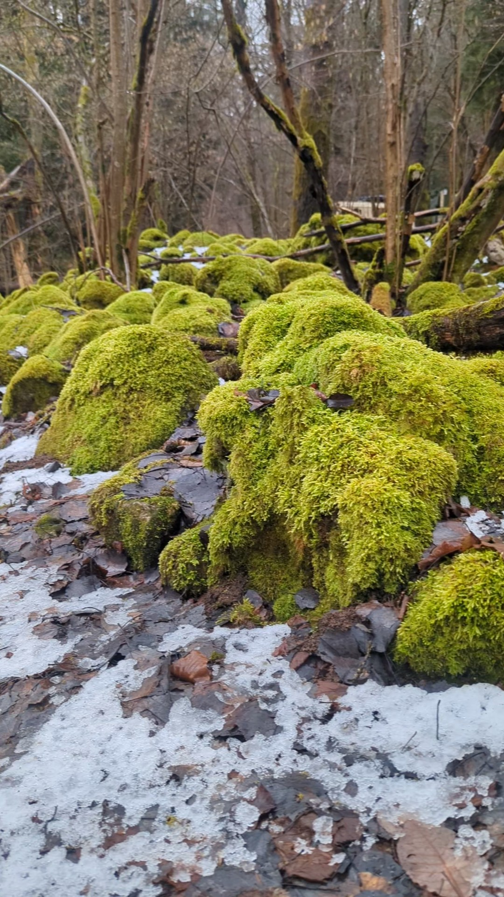
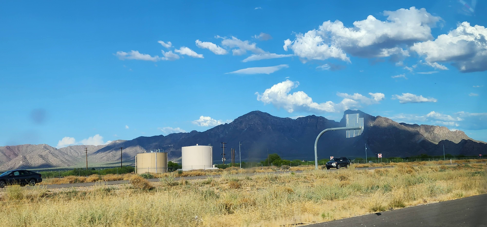

Feb 22, 2026
A collection of moments captured across rolling hills, misty forests, and untouched horizons.
This gallery explores the delicate balance between light, shadow, and scale in natural environments.
Every face carries a unique history. This series focuses on unscripted expressions, natural lighting, and authentic human connection.

Candid snapshots of city life, architecture, and fleeting moments. Finding quiet symmetry amidst the hustle of the modern street.

Slowing down to observe the smaller details—textures of foliage, reflections in water drops, and the subtle shifts of seasonal colors.

A very quiet forest and beautiful place

A warmth and a refreshing summer

Beautiful Sunrise in Kansas